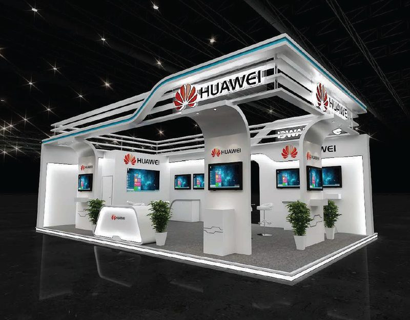

1,284 likes
blue.agency Project One - what we were asked for, and what we built. #exhibitionstand
2 days ago
That gap is where we work. We design and build exhibition stands, pavilions and conference stages - turning a plan on paper into the moment someone decides you’re worth their time.
Start a project
1,284 likes
blue.agency Project One - what we were asked for, and what we built. #exhibitionstand
2 days ago
972 likes
blue.agency Project Two - a curved welcome desk that kept the queue moving. #standdesign
5 days ago
2,110 likes
blue.agency Project Three - suspended signage you can find from the far end of the hall. #wayfinding
1 week ago
1,846 likes
blue.agency Project Four - arches, shade and somewhere to sit down. #pavilion
2 weeks ago
3,402 likes
blue.agency Project Five - doors at nine, first slide at half past. #conferencestage
3 weeks ago
from sketch
to show floor
how we are ?
blue is an advertising agency working where the drawing meets the show floor - exhibition stands, pavilions and conference stages, taken from the first sketch through to the last panel going up.
Designers, 3D artists, fabricators and site crew sit in one team, so the stand you approved on screen is the stand that opens on day one. No handover between three suppliers, no drawings that turn out to be unbuildable, no surprises in hall four at midnight.
What we dowhy we bother
Two sentences we actually hold ourselves to - one about the work in front of us, one about where it is going.
Our mission
A stand is not decoration - it is a room built to start conversations. We design for the walk-past, the pause and the handshake, then build it to survive four days of it.
Our vision
To be the team organisers recommend and clients bring to every show - because the work is good, the timeline is honest and nothing has to be explained twice.
everything under one roof
Design, fabrication and the crew who put it up. Take the whole thing or only the part you are missing.
Custom stands from 12sqm corners to double-deck islands - designed, built, shipped and installed.
01
Country and group pavilions where twenty exhibitors have to share one floor and still look like one idea.
02
Sets, screens, lighting and rigging for keynotes, launches and award nights - built to camera as well as to the room.
03
Concepts, renders and walkthroughs, so the stand is approved on screen long before the first panel is cut.
04
Graphics, wayfinding, giveaways and every printed surface on the stand, colour-matched in one pass.
05
Permits, contractors, build, daily maintenance and strike-out. Our crew stays for the whole show.
06
built, not just rendered
A few of the stands, pavilions and stages we’ve designed and built. There is more where these came from.
Short line on the brief and what we built - replace with the real project copy.
Short line on the brief and what we built - replace with the real project copy.
Short line on the brief and what we built - replace with the real project copy.
Short line on the brief and what we built - replace with the real project copy.
Short line on the brief and what we built - replace with the real project copy.
four steps, no surprises
Step #1
Tell us the space, the show and what you need people to walk away knowing. We measure everything else.
Step #2
You see the stand before it exists - renders from every angle, so nothing is a surprise on build day.
Step #3
Fabrication, print, lighting and fit-out handled by one team. One number to call when something changes.
Step #4
Doors open on a finished stand. We stay on site through the show, then strip it out when it’s over.
tell us the show & the date
Send the stand size, the hall and the date. You get a reply within one working day - a real one, from the person who would run the build.